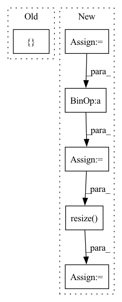

Pattern ID :35417
Before Change
def demo_geodesic_distance2d_gray_scale_image():
img = Image.open("data/img2d.png").convert("L")
seed_position = [ 100, 100After Change
img = Image.open("data/img2d.png").convert("L")
// make image bigger to check how much workload each method can take
imgsize = img.size
scale = 6
imgsize = [x * scale for x in imgsize]
img = img.resize( imgsize)
seed_position = [100 * scale, 100 * scale]
demo_geodesic_distance2d(img, seed_position)
def demo_geodesic_distance2d_RGB_image():In pattern: SUPERPATTERN
Frequency: 3
Non-data size: 6
Instances Fragment ID: 100620936
Project Name: masadcv/fastgeodis
Commit Name: 44d41a1c759aabd6de83b3c30c79b557ae148cea
Time: 2021-09-15
Author: muhammad.asad@kcl.ac.uk
File Name: demo2d.py
M Class Name: AnonimousClass
N Class Name: AnonimousClass
M Method Name: demo_geodesic_distance2d_gray_scale_image(0)
N Method Name: demo_geodesic_distance2d_gray_scale_image(0)
M Parent Class:
N Parent Class:
M File Name: demo2d.py
N File Name: demo2d.py
M Start Line: 78
M End Line: 78
N Start Line: 121
N End Line: 127
Before Change
self.init_renderer(self.get_camera(cam_id), "clean_mesh", "gray")
rendered_img = (self.renderer(
self.mesh)[0, :, :, :3] * 255.0).detach().cpu().numpy().astype(np.uint8)
final_img = np.concatenate([ image[:,:,[2,1,0]], rendered_imgAfter Change
(100.0 * math.cos(np.pi / 180 * angle), self.mesh_y_center,
100.0 * math.sin(np.pi / 180 * angle)))
old_shape = np.array(images[0].shape[:2])
new_shape = ((self.size / old_shape[0]) * old_shape).astype(np.int)
fourcc = cv2.VideoWriter_fourcc(*"mp4v")
video = cv2.VideoWriter(save_path, fourcc, 30, (self.size+new_shape[1]*len(images), self.size))
print(colored("exporting video, please wait for a while...", "blue"))
for cam_id in range(len(self.cam_pos)):
self.init_renderer(self.get_camera(cam_id), "clean_mesh", "gray")
rendered_img = (self.renderer(
self.mesh)[0, :, :, :3] * 255.0).detach().cpu().numpy().astype(np.uint8)
img_lst = [np.array(Image.fromarray(img).resize( new_shape[::-1]) ).astype(np.uint8)[:,:,[2,1,0]] for img in images]
img_lst.append(rendered_img)
final_img = np.concatenate(img_lst,axis=1)
video.write(final_img)
video.release() Fragment ID: 100620935
Project Name: yuliangxiu/icon
Commit Name: 0198e25265de836a9b0c79b017afa7fb5edcb56a
Time: 2022-02-13
Author: yuliang.xiu@tuebingen.mpg.de
File Name: lib/common/render.py
M Class Name: Render
N Class Name: Render
M Method Name: get_rendered_video(3)
N Method Name: get_rendered_video(3)
M Parent Class:
N Parent Class:
M File Name: lib/common/render.py
N File Name: lib/common/render.py
M Start Line: 410
M End Line: 416
N Start Line: 410
N End Line: 424
Before Change
def demo_geodesic_distance2d_RGB_image():
img = Image.open("data/ISIC_546.jpg")
seed_position = [ 128, 128After Change
img = Image.open("data/ISIC_546.jpg")
// make image bigger to check how much workload each method can take
imgsize = img.size
scale = 6
imgsize = [x * scale for x in imgsize]
img = img.resize( imgsize)
seed_position = [128 * scale, 128 * scale]
demo_geodesic_distance2d(img, seed_position)
if __name__ == "__main__": Fragment ID: 100620933
Project Name: masadcv/fastgeodis
Commit Name: 44d41a1c759aabd6de83b3c30c79b557ae148cea
Time: 2021-09-15
Author: muhammad.asad@kcl.ac.uk
File Name: demo2d.py
M Class Name: AnonimousClass
N Class Name: AnonimousClass
M Method Name: demo_geodesic_distance2d_RGB_image(0)
N Method Name: demo_geodesic_distance2d_RGB_image(0)
M Parent Class:
N Parent Class:
M File Name: demo2d.py
N File Name: demo2d.py
M Start Line: 83
M End Line: 83
N Start Line: 131
N End Line: 137